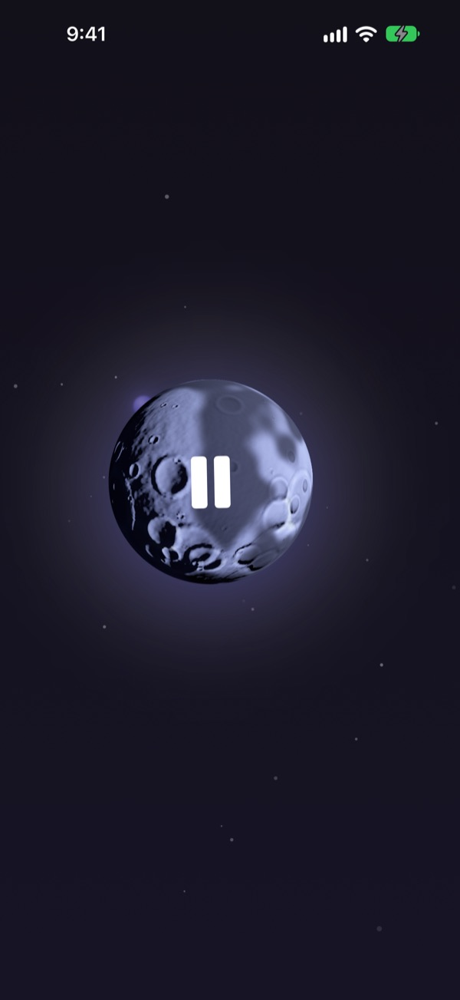
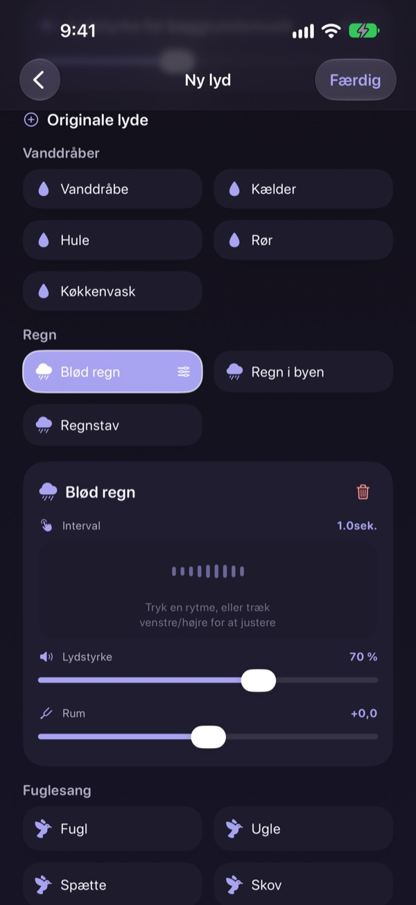
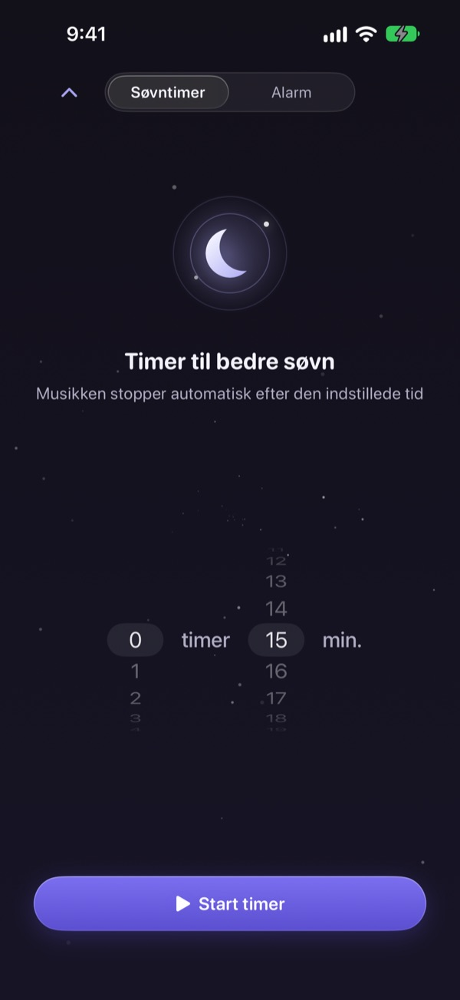
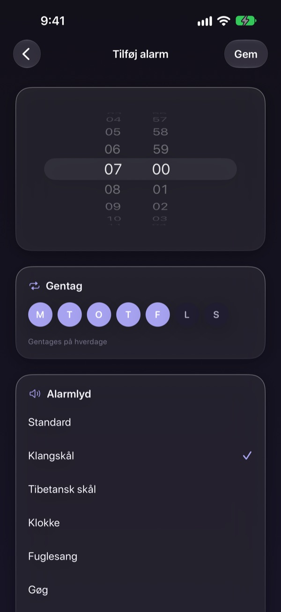
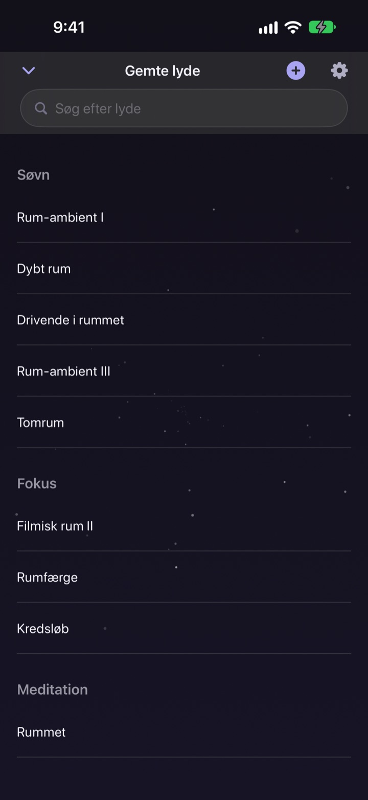

Brug ikke natten på
at lede efter den rigtige lyd
Læg regn, vanddråber og en syngeskål sammen til din egen lyd én gang. Fra næste nat er det bare et tryk på månen.
Alle lyde er gratis at lytte til. Til iPhone og iPad.

Har du brugt en time på at finde noget at falde i søvn til?
Regnen er for ensformig, bølgerne for høje, og videoen bliver afbrudt af en reklame midt om natten. Med Dalbit lægger du selv dine yndlingslyde i lag, til det passer lige præcis dig, og gemmer det bag én enkelt måne.
Byg din lyd i lag
Stabl regn, vanddråber, fuglesang og syngeskåle. Indstil lydstyrke, hvor tit laget lyder, og hvor du hører det fra, og læg bølger eller klaver ind som baggrundsmusik.
Giv mixet et navn, gem det, og vend tilbage til det hver nat.

Den tones ud uden at vække dig
Søvntimeren klipper aldrig lyden af. Den skruer langsomt ned, så slutningen ikke vækker dig igen.
Lyden fortsætter med skærmen slukket eller i en anden app, og lader du den være, dæmpes skærmen af sig selv.

Vågn blidt om morgenen
Sæt alarmer med syngeskål, tibetansk skål, fuglesang eller gøg, og gentag dem på de ugedage, du vælger.

Én måne til det hele
Tryk på månen for at afspille og igen for at sætte på pause. Stryg til siden for en anden lyd, op for søvntimeren og ned for dine gemte lyde.
Når en lyd føles rigtig, så hold fingeren på månen for at føje den til favoritter.

Kom i gang i tre trin
- 1
Tryk på månen
Åbn appen, tryk på månen, og lyden starter med det samme.
- 2
Stryg til siden
Bliv ved, til du finder en lyd, du kan lide.
- 3
Sæt timeren og læg dig
Stryg op, vælg en tid, og så toner lyden langsomt ud.
Det kan månen
- Tryk
- afspil, pause
- Stryg til siden
- næste lyd
- Stryg op
- søvntimer og alarmer
- Stryg ned
- gemte lyde
- Hold fingeren nede
- føj til favoritter
Du kan også sætte på pause og fortsætte fra afspilningsknapperne på låseskærmen.
Det er gratis at lytte. Premium er til at lave flere.
Gratis
- Alle lyde
- Læg lyde i lag til dit eget mix
- Gem op til tre mix
- Søvntimer, der tones ud
- Alarmer med blide lyde
- Favoritter
Dalbit Premium
- Lav og gem så mange mix, du vil
Månedligt abonnement med automatisk fornyelse og gratis prøveperiode
Abonnementet fornyes automatisk, medmindre du opsiger det mindst 24 timer før den aktuelle periode slutter, og du betaler, når prøveperioden er slut. Apples standardbetingelser for brug (EULA) gælder.
Ofte stillede spørgsmål
Hvordan afspiller og skifter jeg lyde?
Tryk på månen på hjemmeskærmen for at afspille og igen for at stoppe. Stryg til siden for en anden lyd, op for søvntimeren og ned for dit bibliotek.
Stopper lyden, når skærmen slukker?
Nej. Den spiller videre med skærmen slukket eller i en anden app. Tryk på månen igen eller brug knapperne på låseskærmen for at stoppe den.
Hvad sker der, når søvntimeren udløber?
Lyden stopper ikke brat. Den bliver gradvist svagere og stopper så, så du ikke vågner.
Min alarm ringer ikke.
Appen beder om tilladelse til alarmer, når du opretter den første. Tjek, at den er slået til under Indstillinger > Dalbit.
Hvor gemmes mine mix?
Dine mix, alarmer og indstillinger ligger kun på denne enhed. Sletter du appen, forsvinder de også.
Hvad kan jeg bruge gratis?
Alle lyde, lag på lag og op til tre egne mix. Søvntimeren og alarmerne er også gratis. Premium fjerner grænsen for antal mix.
Hvordan opsiger jeg abonnementet?
Gå til Indstillinger > Apple-konto > Abonnementer, vælg Dalbit, og opsig det. Opsiger du ikke mindst 24 timer før periodens udløb, fornyes det automatisk.
Jeg har skiftet telefon, og abonnementet er væk.
Log ind med samme Apple-konto, åbn abonnementsskærmen i Dalbit, og tryk på Gendan køb.
Hvordan melder jeg en fejl eller foreslår en funktion?
Send feedback fra appens indstillinger eller skriv til adressen nedenfor. Vi svarer som regel inden for få dage.
Spørgsmål eller idéer? Skriv til mizzking75@gmail.com.